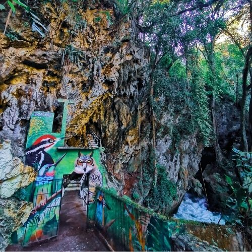

Semuc Champey
Es uno de los destinos naturales más conocidos de Guatemala. Este conjunto de pozas de agua turquesa rodeadas de vegetación se encuentra en Alta Verapaz
Disfruta el paraíso natural gracias a su clima húmedo y frondoso que forma Alta y Baja Verapaz
Es uno de los destinos naturales más conocidos de Guatemala. Este conjunto de pozas de agua turquesa rodeadas de vegetación se encuentra en Alta Verapaz

El Parque Nacional Grutas de Lanquín, ubicado en el departamento de Alta Verapaz, es hogar de murciélagos, el río Cahabón y mitos mayas antiguos

Este lugar se encuentra en Baja Verapaz y se ha convertido en un punto clave para quienes desean conocer de cerca el hábitat del ave nacional: el quetzal.